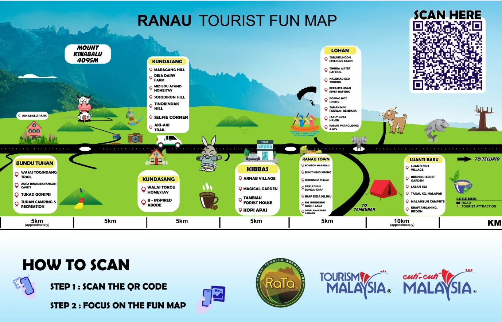
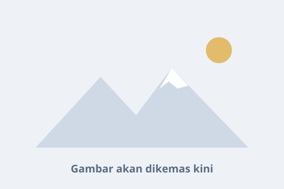
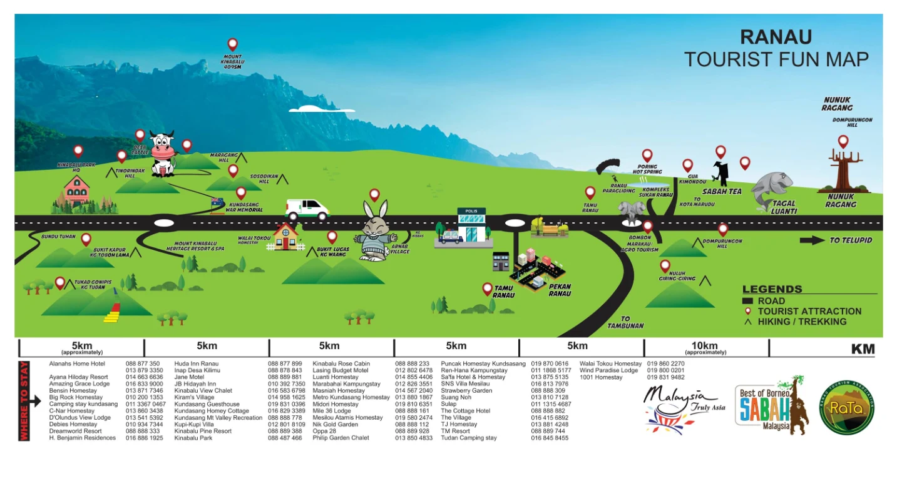

Pelancongan
Terokai Ranau, di kaki Gunung Kinabalu
Daerah Ranau terkenal dengan Gunung Kinabalu (4,095m), ladang tenusu, teh Sabah, sungai untuk rafting, air panas serta homestay yang mesra. Gunakan peta di bawah untuk merancang perjalanan anda dari Bundu Tuhan hingga ke Luanti Baru.

Tempat pelancongan mengikut DUN
38 tempat pelancongan di Daerah Ranau, disusun mengikut kawasan Dewan Undangan Negeri. Klik koordinat untuk membuka lokasi di Google Maps.
DUN N.36 Kundasang
Kaki Gunung Kinabalu: ladang tenusu, bukit pemandangan dan pendakian.
| Bil. | Nama tempat | Koordinat | Gambar |
|---|---|---|---|
| 1 | Desa Cattle Dairy Farm, Mesilou | 6.01640, 116.59136 |  |
| 2 | Sosodikon Hill | 5.99771, 116.59347 | |
| 3 | Kundasang War Memorial | 5.98735, 116.57631 | |
| 4 | Kinabalu Park | 6.00570, 116.54260 AnggaranIbu pejabat taman | |
| 5 | Gunung Kinabalu | 6.07507, 116.55870Puncak Low (4,095 m) | |
| 6 | Maragang Hill | 6.03920, 116.58577 | |
| 7 | Mesilou Highland Strawberry Farm | 6.01728, 116.59917 | |
| 8 | Mesilou Cat's Village | Belum disahkanKawasan Mesilou | |
| 9 | Kundasang Strawberry Farm | Belum disahkan | |
| 10 | Alpaca Club | 6.00650, 116.58799 | |
| 11 | Mount Kinabalu Golf Club | 6.02709, 116.59681 Anggaran | |
| 12 | Tinorindak Hill | Belum disahkanBerhampiran Culvert View | |
| 13 | Kundasang Mount Valley Recreation | Belum disahkan | |
| 14 | Panar Laban | 6.05904, 116.56615Laban Rata, 3,272 m | |
| 15 | Mountain Torq Via Ferrata | 6.05904, 116.56615 AnggaranTitik mula di Panar Laban |
DUN N.37 Karanaan
Terapi ikan, bukit pemandangan dan sejarah Death March.
| Bil. | Nama tempat | Koordinat | Gambar |
|---|---|---|---|
| 1 | Bombon Marakau Fish Spa | 5.94437, 116.69291 | |
| 2 | Dompurungon Hill, Kampung Marakau | 5.94974, 116.68616 AnggaranKawasan Kg. Marakau | |
| 3 | Lugas Hill, Kampung Waang | 5.92224, 116.60179 AnggaranKawasan Kg. Waang | |
| 4 | Zudin Platform, Death March | Belum disahkan | |
| 5 | Quailey's Hill Memorial | 5.94556, 116.78083 | |
| 6 | Tarikan pelancongan Kampung Karanaan | 5.92896, 116.53836 AnggaranKawasan Kg. Karanaan | |
| 7 | Kawasan rekreasi Kampung Randagong | 5.91120, 116.56007 AnggaranJalan ke Kg. Randagong | |
| 8 | Kawasan pelancongan Kampung Tudan | 5.93583, 116.48943 AnggaranKawasan Kg. Tudan |
DUN N.38 Paginatan
Ladang teh, air panas, air terjun dan sungai.
| Bil. | Nama tempat | Koordinat | Gambar |
|---|---|---|---|
| 1 | Sabah Tea Garden, Kampung Nalapak | 5.94822, 116.78544 | |
| 2 | Ranau Paragliding Park | 5.99252, 116.68591Kompleks Sukan Ranau | |
| 3 | Tagal Sungai Moroli, Kampung Luanti Baru | 5.94633, 116.76938 | |
| 4 | Taralamas River Canyon, Kampung Tiang Lama | 5.78595, 116.60293 AnggaranLaluan bermula di Kg. Tiang Lama | |
| 5 | Tiang Lama Eco Tourism | 5.78595, 116.60293 AnggaranKawasan Kg. Tiang Lama | |
| 6 | Poring Hot Spring | 6.04796, 116.70230 | |
| 7 | Kipungit Waterfall | 6.05157, 116.70098 | |
| 8 | Langanan Waterfall | 6.06365, 116.68589 | |
| 9 | Nulu Tompong Ranau | Belum disahkan | |
| 10 | Rafflesia Conservation Garden | 6.03912, 116.71365 AnggaranKawasan Poring | |
| 11 | Orchid Conservation Centre | 6.04796, 116.70230 AnggaranDalam kompleks Poring Hot Spring | |
| 12 | Sungai Biru Lohan | Belum disahkanKawasan Lohan | |
| 13 | Kinomulok Garden, Lohan Ulu | 5.99465, 116.70279 AnggaranKawasan Kg. Lohan Ulu | |
| 14 | The Last POW Camp Memorial, Kenipir | 5.90778, 116.64806 | |
| 15 | Arnab Village | Belum disahkanKg. Purakagis, kira-kira 1.6 km dari simpang Kibbas |
Tentang koordinat: lokasi bertanda Anggaran menunjukkan kawasan kampung atau titik mula laluan, bukan lokasi tepat tarikan. Lokasi Belum disahkan akan dikemas kini. Sila maklumkan pembetulan kepada Pejabat Daerah Ranau.
Tarikan lain dalam peta pelancongan
- Gua Kimondou
- Nuluh Giring-Giring
- Nunuk Ragang
- Bukit Kapur, Kg. Tobok Lama
- Komplek Sukan Ranau
- Tamu Ranau
Tempat penginapan
Senarai hotel, chalet, homestay dan tapak perkhemahan beserta nombor telefon untuk tempahan.

Sila sahkan harga, ketersediaan dan nombor telefon terus dengan pengendali penginapan sebelum membuat tempahan.
Peta dengan kerjasama Ranau Tourism Association (RaTa), Tourism Malaysia dan Best of Borneo Sabah. Untuk pertanyaan, sila hubungi Pejabat Daerah Ranau.